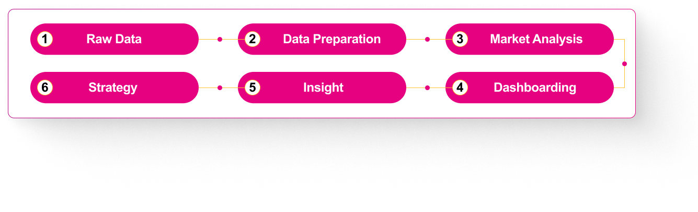

I built an end-to-end automotive market intelligence solution to analyze Indonesia's automotive market and support strategic decisions around inventory, market growth, and EV distribution.
The project combines data analysis, dashboard development, market research, and business strategy into two main deliverables:
The project combines data analysis, dashboard development, market research, and business strategy into two main deliverables.
A data-driven presentation translating analytical findings into strategic recommendations for inventory optimization, growth opportunities, and market response.
The project was designed to help identify which vehicle models are selling quickly, which models show potential inventory buildup, which segments are growing, and which regions show stronger EV adoption.
The Problem
A stagnant automotive market, aggressive EV competition, shifting consumer preferences, and inventory uncertainty created challenges in deciding what to stock, where to distribute, and how to respond to market changes.
What I Did
Analyzed wholesale vs retail sales, identified growth segments, evaluated EV adoption by region, built a market monitoring dashboard, and translated the findings into strategic recommendations.
End-to-End
